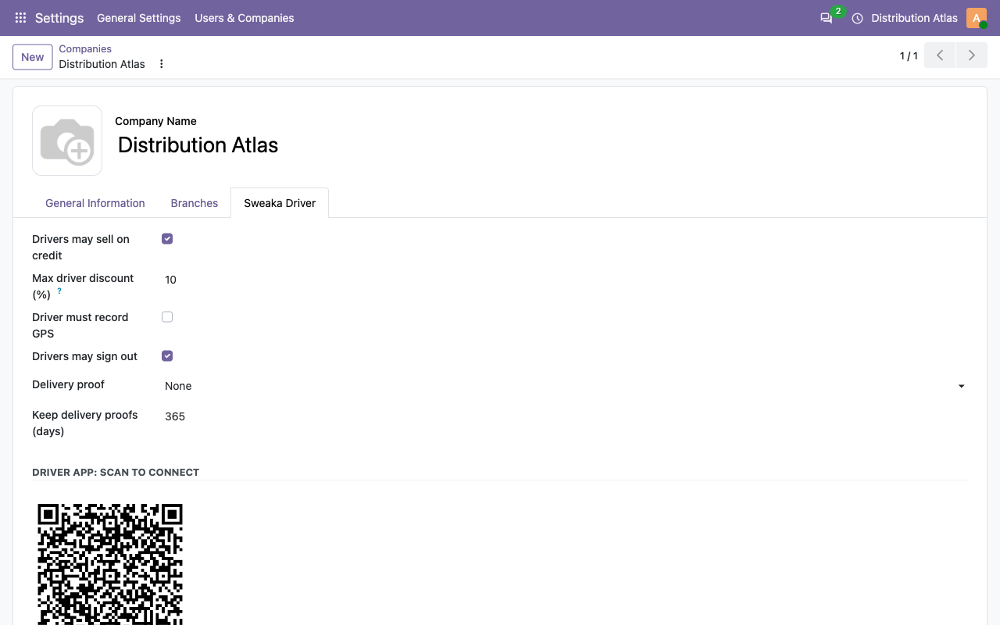
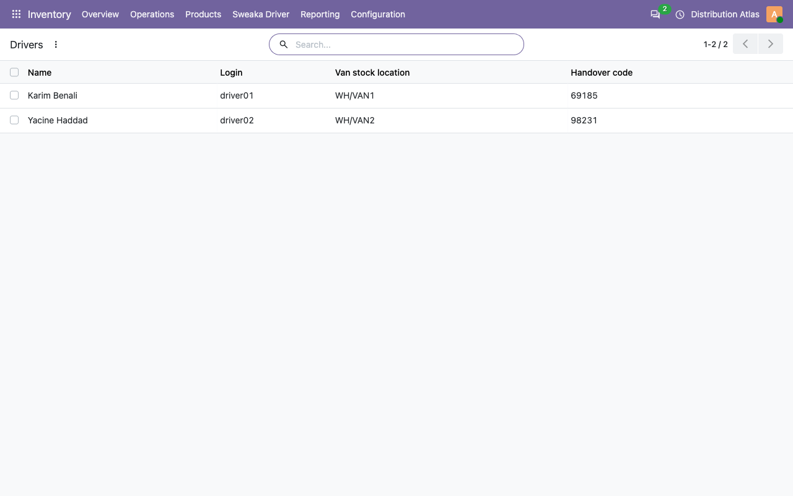
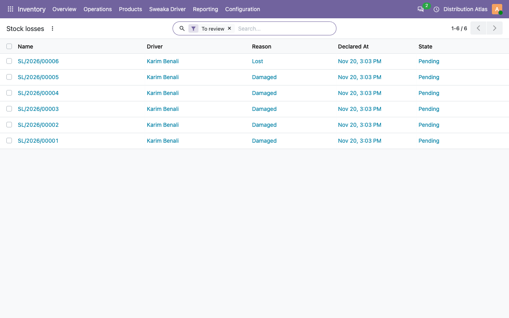
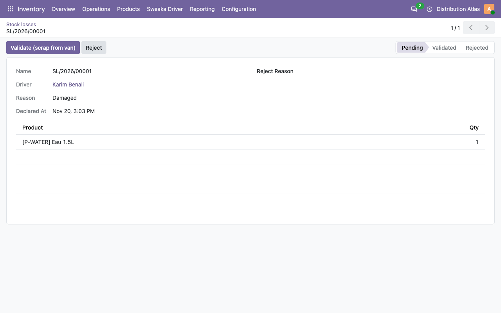
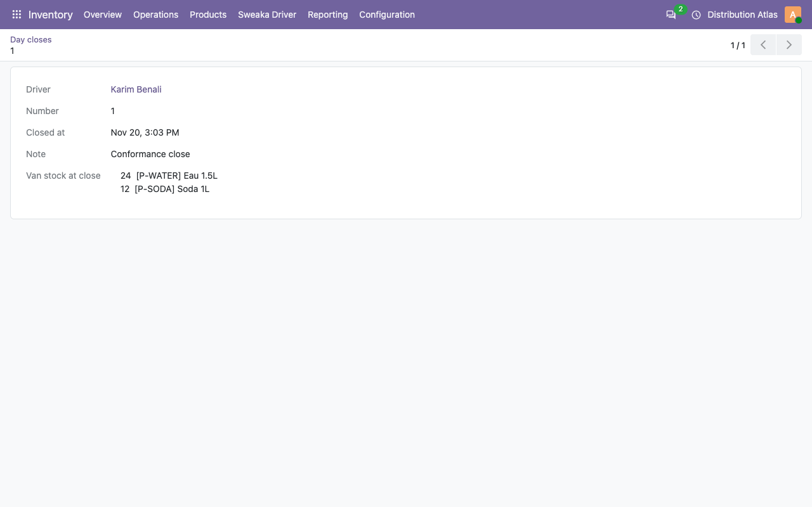

Connect the Sweaka Driver Android / iOS app to your Odoo. Drivers sell from the van, take orders, collect payments, take returns, deliver and declare losses — even without network. Everything lands in Odoo as regular documents.
1. Settings › Companies › Sweaka Driver: credit, discount cap, GPS, delivery proof — drivers scan the QR code to connect.

2. Settings › Users: tick Sweaka driver and pick the van stock location. Inventory › Sweaka Driver › Drivers shows the handover code to give at the loading dock.

3. Review what drivers declare: stock losses (validate = out of the van), cash handovers, day closes.



Full guide: INSTALL.md inside the module (HTTPS exposure, reverse proxy, tunnel / VPN).